Books
Books on numerical methods, scientific computing, parallel algorithms and data-driven modelling. Individual editions and translations are listed below.
2018
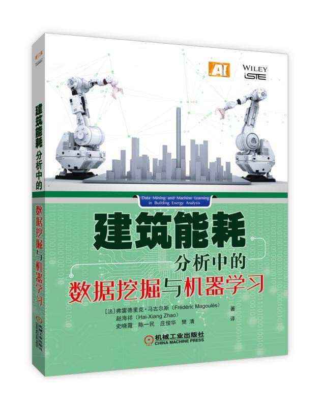
建筑能耗分析中的数据挖掘与机器学习
Authors: F. Magoulès, H. Zhao and C. Yimin.
Publication: China Machine Press · 2018 · Chinese.
ISBN: 9787111602675.
Book description
建筑的能源性能受很多因素的影响，《建筑能耗分析中的数据挖掘与机器学习》针对建筑的复杂特性，重点研究用新的数据挖掘和机器学习方法来对建筑能耗进行准确的预测、分析或者故障检测/诊断。《建筑能耗分析中的数据挖掘与机器学习》涉及建筑能耗分析的建模及用于模型降阶与并行计算的技术和相关算法，同时提出了新的算法用于能耗分析预测及建筑能耗故障检测/诊断，既有一定的理论深度，又有较好的应用宽度。我国建筑能耗占社会总能耗很大的比例，目前对建筑能耗分析的理论、技术和方法所做的研究工作与国际先进水平有相当大的差距，在实际建筑中实施建筑能耗管理与分析的水平也较低。因此，当前特别迫切需要学习并借鉴国外在建筑能耗管理、优化控制与评估上的先进理论、技术与实施经验。
《建筑能耗分析中的数据挖掘与机器学习》很好地填补了我国在建筑能耗相关领域的研究与应用的空白，对从事能源管理和能源效率的知识发现和数据挖掘研究领域的工程师有很大的吸引力，本书提出的算法对与建筑能耗分析相关的工程领域的研究生有很好的借鉴作用，对设计建筑的工程师也有很好的指导作用。后，对于建筑能耗的预测分析对我国的建筑能耗管理也有很好的促进作用。
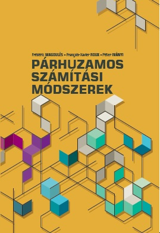
Párhuzamos Számítási Módszerek
Authors: F. Magoulès, F.-X. Roux and P. Iványi.
Publication: Pollack Press · 2018 · Hungarian.
ISBN: 978-963-429-234-0.
Book description
Ez a könyv bevezetés a nagy-teljesítményű számítások (High Performance Computing, HPC) területére és fő célja olyan numerikus algoritmusok bemutatása, amelyek segítségével lehetővé válik hagyományos számítógéppel
nem megoldható problémák megoldása és kezelése is.
A párhuzamos számítási módszerek aktuális kérdéseiből a következőket tárgyaljuk:
- adat párhuzamosság,
- vektorizáció,
- üzenet-küldés,
- mátrixok párhuzamos összeállítása,
- mátrixok párhuzamos szorzása,
- nagyméretű lineáris egyenletrendszerek direkt és iteratív megoldása párhuzamosan.
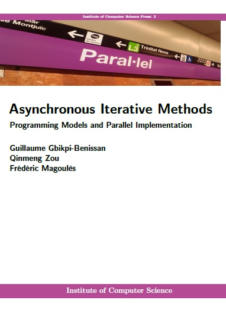
Asynchronous Iterative Methods: Programming Models and Parallel Implementation
Authors: G. Gbikpi-Benissan, Q. Zou and F. Magoulès.
Publication: Institute of Computer Sciences Press · 2018 · English.
ISBN: 978-2-490255-01-6.
Book description
Asynchronous Iterative Methods: Programming Models and Parallel Implementation provides an upper level introduction to parallel programming of asynchronous iterations.
In addition to covering general asynchronous concepts, this text teaches practical programming skills for developing a unified, structured, scalable and machine-independent approach to asynchronous parallel computing.
It presents both theory and practice, and provides detailed concrete examples using a message-passing approach.
This book explains how JACK, an asynchronous computation kernel, manages to bridge the gap between performance, flexibility and accuracy, and how the reader can take advantage of it.
- Covers parallel programming approaches of asynchronous iterations;
- Features asynchronous parallel programming with Message-Passing Interface (MPI);
- Includes access to an asynchronous computation kernel (JACK) that enables readers the opportunity to program easily any asynchronous algorithms and receive immediate feedback on the result validity of their program;
- Provides several asynchronous iterations convergence detection tools;
- Describes C++ and C language bindings of asynchronous iterations;
- Contains numerous practical asynchronous parallel programming examples.
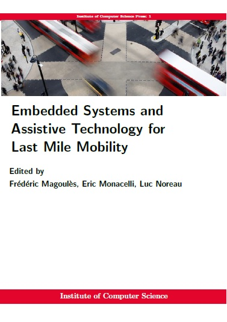
Embedded Systems and Assistive Technology for Last Mile Mobility
Editors: F. Magoulès, E. Monacelli and L. Noreau.
Publication: Institute of Computer Science Press, Antony, France · 2018 · English.
Format: Paperback · 200 pages.
ISBN: 978-2-490255-00-9.
Book description
With contributions from: P.E. Abi-Char, A. Ait Moussa, M. Al Halabi, G. Bourhis, G. Brioschi, S. Charles, M. Cherif Rahal, S. Chevallier, M.-A. Choukou, M. Colombetti, F. Coulomier, A. de Miranda Neto, F. Dumont, F. Dupin, G. Edwards, F. Goncalves, H. Guan, A. Hadj-Abdelkader, M. Hina, J. Leblond, J. Lettre, P.-A. Leyrat, F. Magoules, H. Martin, E. Monacelli, Y. Morere, M.A. Mostafavi, I. Mougharbel, L. Noreau, P. Pourghomi, F. Pouvrasseau, G. Rabelo, O. Rabreau, A. Ramdane-Cherif, C. Riman, F. Routhier, C.R.B. Santos, A. Soukane, L. Trenoras, A. Zammouri, H. Zatla.
Acting for inclusive mobility means understanding the daily obstacles associated with mobility and building concrete and sustainable solutions to facilitate mobility. The objective is to provide innovative mobility solutions, including individual solutions, which will allow greater accessibility for all, whatever the users, especially the most fragile, for whom access to adapted transport services and services is limited costly remains essential. To tackle the sustainable mobility challenges, we present different innovation for last mile mobility. It aims new assistive technologies relevant to new alternative solutions to traditional cars, as their extensive results in more traffic congestion, noise, pollution, and less safe environments within cities.
This book will focus on demonstrating the importance of using a conceptual approach to develop innovation in mobility and to involve potential users in the early development stages, including examples of projects and solutions to support this approach.
2017
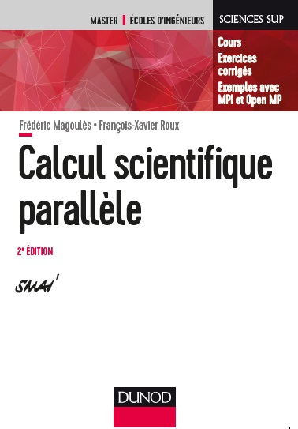
Calcul scientifique parallèle: cours, exemples avec OpenMP et MPI, exercices corrigés — 2e édition
Authors: F. Magoulès and F.-X. Roux.
Publication: Dunod, Science Sup · 2017 · French.
ISBN: 978-2-10-076929-2.
Book description
Le but de cet ouvrage est d'expliquer et d'illustrer par des exemples concrets les techniques recentes de calcul scientifique pour la simulation numerique de problemes de grandes tailles issus de systemes modelises par des equations aux derivees partielles. Les differentes methodes de formation et de resolution des grands systemes lineaires sont presentees. La conception des methodes recentes et les algorithmes associes sont etudies en detail.
Ce livre est destine aux etudiants en Masters de mathematiques appliquees ou de mecanique numerique ainsi qu'aux eleves ingenieurs.
2016
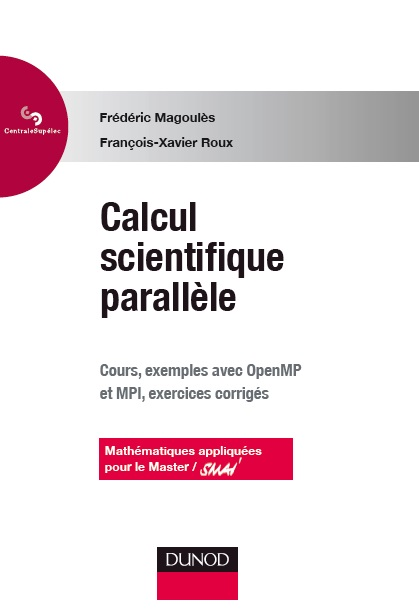
Calcul scientifique parallèle — Collection Cours de CentraleSupélec
Authors: F. Magoulès and F.-X. Roux.
Publication: Dunod, Collection Cours de CentraleSupélec · 2016 · French.
ISBN: 978-2-10-070262-6.
Data Mining and Machine Learning in Building Energy Analysis
Authors: F. Magoulès and H.-X. Zhao.
Publication: Wiley–ISTE, Computer Engineering Series · 2016 · English.
ISBN: 978-1-84821-422-4.
Book description
The energy consumption of a building has, in recent years, become a determining factor during its design and construction. With carbon footprints being a growing issue, it is important that buildings be optimized for energy conservation and CO2 reduction. This book therefore presents AI models and optimization techniques related to this application. The authors start with a review of recent models for the prediction of building energy consumption: engineering methods, statistical methods, artificial intelligence methods, ANNs and SVMs in particular. The book then focuses on SVMs, by first applying them to building energy consumption, then presenting the principles and various extensions, and SVR. The authors then move on to RDP, which they use to determine building energy faults through simulation experiments before presenting SVR model reduction methods and the benefits of parallel computing. The book then closes off by presenting some of the current research and advancements in the field.
2015
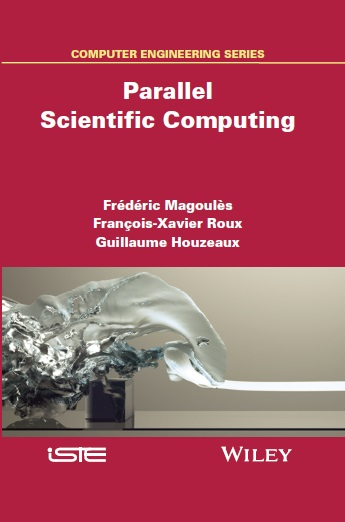
Parallel Scientific Computing
Authors: F. Magoulès, F.-X. Roux and G. Houzeaux.
Publication: Wiley–ISTE, Computer Engineering Series · 2015 · English.
ISBN: 978-1-84821-581-8.
Book description
Scientific computing has become an indispensable tool in numerous fields, such as physics, biology, chemistry, finance and engineering. For example, it enables us, thanks to efficient algorithms adapted to current computers and supercomputers, to simulate complex phenomena, without the help of models or experimentations. Some examples are the structural behaviors of civil engineering structures, the sound level in a theater, a fluid flowing around an aircraft or a formula one car, and the hydrodynamics of a racing yacht. This book presents the scientific computing techniques applied to parallel computing for the numerical simulation of large-scale problems; these problems mainly result from systems modeled by partial differential equations. Computing concepts are tackled via examples. Implementation and programming techniques resulting from the finite element, finite volume and finite difference methods are presented for direct solvers, iterative solvers and domain decomposition methods, along with an introduction to MPI and OpenMP.
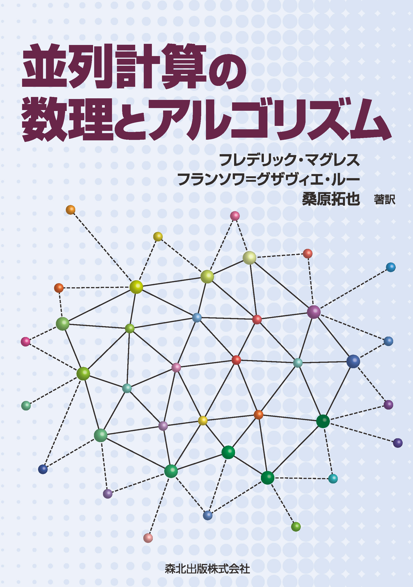
Heiretsu keisan-no suuri-to algorithm (Parallel Scientific Computing)
Authors: F. Magoulès, F.-X. Roux and T. Kuwahara.
Publication: Morikita Publishing · 2015 · Japanese.
ISBN: 978-4627807112.
Book description
並列計算の数理とアルゴリズム
フレデリック・マグレス , フランソワ = グザヴィエ・ルー , 桑原 拓也
科学技術計算は、物理や機械工学、生物学、金融工学、産業などの多くの分野で今日欠かすことのできない道具となっている。例えば、高性能なアルゴリズムを現在のコンピュータに適用することにより、模型実験を行わなくても梁のたわみ、劇場での音響、航空機の翼周りの流れを知ることができる。 本書の目的は、 複雑なシステムの大規模な問題を解くための 数値シミュレーションに関する近年の科学技術計算手法を分かり易く説明することである。大規模な線型問題に関係するシステムの様々な組み立て方法や解法を紹介している。 メッセージ通信プログラミング手法やループ並列計算について、 を用いた例題により分かり易く説明している 。理解を深めるために章末には演習問題も設けている。 本書は主に応用数学および数値計算に携わる機械工学を専攻する修士課程の学生、さらにハイパフォーマンス計算に興味を抱くすべての理工学分野の学生を対象としている。
2014
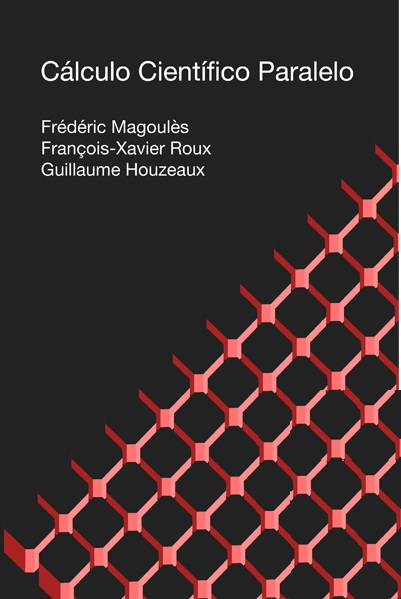
Cálculo científico paralelo
Authors: F. Magoulès, F.-X. Roux and G. Houzeaux.
Publication: CIMNE · 2014 · Spanish.
ISBN: 978-84-941686-3-5.
Book description
El calculo cientifico se ha convertido en una herramienta imprescindible en numerosos campos como la fisica, la quimica, la biologia, las finanzas o la industria. La simulacion de fenomenos cada vez mas complejos permite reducir el numero de experimentos o incluso prescindir de ellos, asi como explorar nuevas soluciones a los problemas propuestos. Nada de esto seria viable sin el desarrollo de algoritmos eficientes y adaptados a las nuevas arquitecturas computacionales paralelas de las que hoy disponemos.
El objetivo de este libro es explicar las tecnicas del calculo cientifico paralelo para la simulacion numerica de problemas de gran tamano, derivados de la resolucion de ecuaciones en derivadas parciales que rigen los fenomenos a resolver. Todo ello quedara ilustrado a traves de ejemplos concretos para facilitar su comprension.
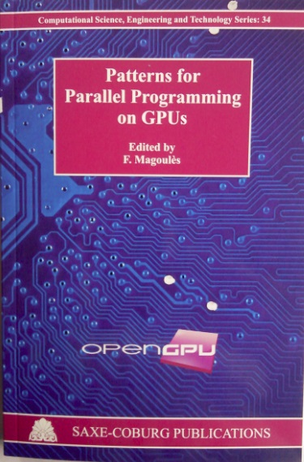
Patterns for Parallel Programming on GPUs
Editors: F. Magoulès.
Publication: Saxe-Coburg Publications · 2014 · English.
ISBN: 978-1-874672-57-9.
Book description
With contributions from: M. Amini, C. Ancourt, F. Andzembe, V. Arslan, R. Barrere, M. Barreteau, J.-M. Batto, F. Boumezbeur, M. Bourgoin, F. Catthoor, E. Chailloux, H.-P. Charles, J.-M. Chauvet, A. Cohen, S. Contassot-Vivier, R. Couturier, B. Creusillet, G.JL Colin de Verdiere, V. Ducrot, J.I. Gomez, D.R.C. Hill, F. Irigoin, J.C. Juega, R. Keryell, J. Koko, J.-L. Lamotte, E. Lenormand, V. Lomuller, F. Magoules, E. Mahe, S. Monot, J. Passerat-Palmbach, T. Saidani, B. Starynkevitch, F. Tahi, D. Tello, S. Tempel, C. Tenllado, V.D. Tran, S. Verdoolaege, S. Vialle, and L. Ziane Khodja.
Multi-core and many-core platforms lead the computer industry, forcing software developers to adopt new programming paradigms, in order to fully exploit their computing capabilities such as Graphics Processing Units (GPUs). GPU-based application development requires a great effort from application programmers. On one hand, they must take advantage of the massively parallel platform in the problem modeling. On the other hand, the applications have to make an efficient use of the heterogeneous memory system, managing several levels that are software or hardware controlled. Generally the programmers' methodology consists in evaluating several mapping alternatives, guided by their experience and intuition, which becomes inefficient for software development and maintenance.
This volume presents in thirteen chapters some methodologies and design patterns for parallel programing on GPUs, to help the programmers to make the good choices. Each chapter, written by different authors, presents a state-of-the-art of some innovative methods, techniques or algorithms, usefull for GPU computing. A bibliography is included at the end of each chapter.
The main topics considered in the book include: CUDA and OpenCL programming langage, parallelizing compilers generating code, dynamic code generation, parallel skeletons, high level data flow models, optimizing source code, and numerical methods. The book includes details of the implementation of the algorithms as well as both academic and real engineering examples.
2013
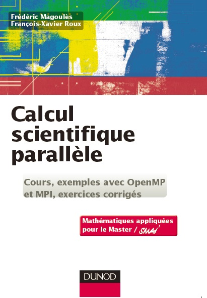
Calcul scientifique parallèle: cours, exemples avec OpenMP et MPI, exercices corrigés
Authors: F. Magoulès and F.-X. Roux.
Publication: Dunod, Science Sup · 2013 · French.
ISBN: 978-2-10-058904-3.
Book description
Le calcul scientifique est devenu un outil indispensable dans de tres nombreux domaines de la physique, la mecanique, la biologie ou la finance. Il permet par exemple, grace a des algorithmes performants, de simuler l'ecoulement de l'air autour d'une aile d'avion, ou le comportement d'une structure en materiaux composites.
Le but de cet ouvrage est d'expliquer des techniques avancees de calcul scientifique, pour la resolution de problemes de grandes tailles issus de la modelisation numerique de phenomenes complexes. Les techniques de programmation par echanges de messages et de parallelisme de boucle sont illustrees par des exemples avec MPI et OpenMP. Des exercices corriges completent chaque chapitre.
Ce livre est destine aux etudiants en Masters de mathematiques appliquees ou de mecanique numerique ainsi qu'aux eleves ingenieurs.
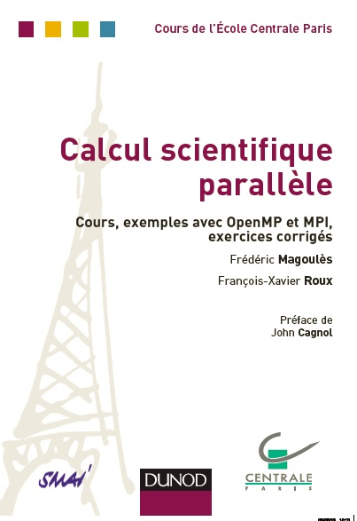
Calcul scientifique parallèle — Collection Cours de l’École Centrale Paris
Authors: F. Magoulès and F.-X. Roux.
Publication: Dunod, Collection Cours de l’École Centrale Paris · 2013 · French.
ISBN: 978-2-10-070262-6.
2012
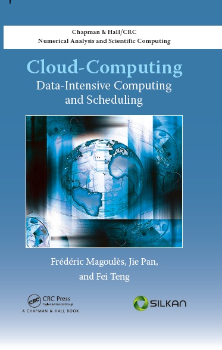
Cloud Computing: Data-Intensive Computing and Scheduling
Authors: F. Magoulès, J. Pan and F. Teng.
Publication: Chapman & Hall/CRC · 2012 · English.
ISBN: 978-1-4665-0782-1.
Book description
As more and more data is generated at a faster-than-ever rate, processing large volumes of data is becoming a challenge for data analysis software. Addressing performance issues, Cloud Computing: Data-Intensive Computing and Scheduling explores the evolution of classical techniques and describes completely new methods and innovative algorithms. The book delineates many concepts, models, methods, algorithms, and software used in cloud computing.
After a general introduction to the field, the text covers resource management, including scheduling algorithms for real-time tasks and practical algorithms for user bidding and auctioneer pricing. It next explains approaches to data analytical query processing, including pre-computing, data indexing, and data partitioning. Applications of MapReduce, a new parallel programming model, are then presented. The authors also discuss how to optimize multiple group-by query processing and introduce a MapReduce real-time scheduling algorithm.
A useful reference for studying and using MapReduce and cloud computing platforms, this book presents various technologies that demonstrate how cloud computing can meet business requirements and serve as the infrastructure of multidimensional data analysis applications.
2011
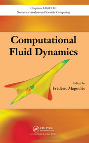
Computational Fluid Dynamics
Editors: F. Magoulès.
Publication: Chapman & Hall/CRC · 2011 · English.
ISBN: 978-1-4398-5661-1.
Book description
With contributions from: F. Alauzet, J. Boudet, A. Carboussat, S. Camarri, A. Dervieux, F. Godeferd, G. Jouvet, B. Koobus, F. Le Boeuf, F. Magoules, J.-C. Marongiu, H. Ouvrard, M. Picasso, J. Rappaz, M.-V. Salvetti and S. Wornom.
Exploring new variations of classical methods as well as recent approaches appearing in the field, Computational Fluid Dynamics demonstrates the extensive use of numerical techniques and mathematical models in fluid mechanics. It presents various numerical methods, including finite volume, finite difference, finite element, spectral, smoothed particle hydrodynamics (SPH), mixed-element-volume, and free surface flow.
Taking a unified point of view, the book first introduces the basis of finite volume, weighted residual, and spectral approaches. The contributors present the SPH method, a novel approach of computational fluid dynamics based on the mesh-free technique, and then improve the method using an arbitrary Lagrange Euler (ALE) formalism. They also explain how to improve the accuracy of the mesh-free integration procedure, with special emphasis on the finite volume particle method (FVPM). After describing numerical algorithms for compressible computational fluid dynamics, the text discusses the prediction of turbulent complex flows in environmental and engineering problems. The last chapter explores the modeling and numerical simulation of free surface flows, including future behaviors of glaciers.
The diverse applications discussed in this book illustrate the importance of numerical methods in fluid mechanics. With research continually evolving in the field, there is no doubt that new techniques and tools will emerge to offer greater accuracy and speed in solving and analyzing even more fluid flow problems.
2010
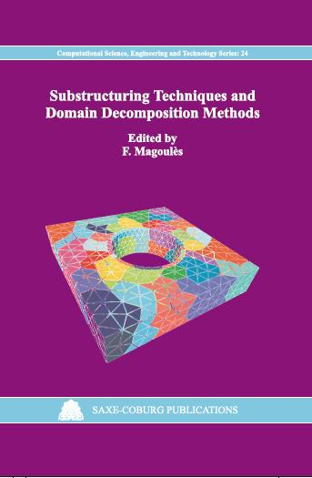
Substructuring Techniques and Domain Decomposition Methods
Editors: F. Magoulès.
Publication: Saxe-Coburg Publications · 2010 · English.
ISBN: 978-1-874672-33-3.
Book description
With contributions from: H. Akiba, J.M. Bahi, R. Couturier, C.-H. Lai, D. Laiymani, Y. Maday, F. Magoules, T. Miyamura, K. Moriya, T. Nodera, D. Rixen, A. Suzuki, M. Tabata, C. Venet and L. Zhang.
Domain Decomposition methods are well suited for parallel computations. Indeed, the division of a problem into smaller subproblems, through artificial subdivisions of the domain, is a means for introducing parallelism. Domain Decomposition and Substructuring strategies include in one way or another the following ingredients: - a decomposer to split a mesh into subdomains using different heuristics ; - local solvers (direct or iterative, exact or approximate) to find solutions for the subdomains for specific boundary conditions on the interface ; - interface conditions (weak or strong) enforcing compatibility and equilibrium between overlapping or non-overlapping subdomains ; - a solution strategy for the interface problem. The differences between the methods lies in how those ingredients are actually put to work and how they are combined to form an efficient solution strategy for the problem at hand.
This volume presents in nine Chapters a selection of some Domain Decomposition and Substructuring methods. The main topics considered in the book include: parareal in time algorithm, transformation methods and induced parallel properties for the temporal domain, asynchronous iterative methods, asynchronous sub-structuring methods, asynchronous multi-splitting methods, parallel iterative methods, coarse grid conjugate gradient, multi-point constraints in domain decomposition methods, approximate inverse preconditioning techniques, congruent sub-domains, linear and non-linear problems.
The topics covered in this book are wide ranging and demonstrate the extensive use of substructuring and domain decomposition methods in fluid mechanics, structural mechanics, and computational finance.
2009
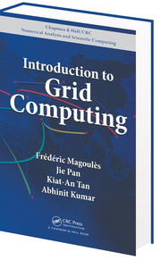
Introduction to Grid Computing
Authors: F. Magoulès, J. Pan, K.-A. Tan and A. Kumar.
Publication: Chapman & Hall/CRC · 2009 · English.
ISBN: 978-1-4200-7406-2.
Book description
Poised to follow in the footsteps of the Internet, grid computing is on the verge of becoming more robust and accessible to the public in the near future. Focusing on this novel, yet already powerful, technology, Introduction to Grid Computing explores state-of-the-art grid projects, core grid technologies, and applications of the grid.
After comparing the grid with other distributed systems, the book covers two important aspects of a grid system: scheduling of jobs and resource discovery and monitoring in grid. It then discusses existing and emerging security technologies, such as WS-Security and OGSA security, as well as the functions of grid middleware at a conceptual level. The authors also describe famous grid projects, demonstrate the pricing of European options through the use of the Monte Carlo method on grids, and highlight different parallelization possibilities on the grid.
Taking a tutorial approach, this concise book provides a complete introduction to the components of the grid architecture and applications of grid computing. It expertly shows how grid computing can be used in various areas, from computational mechanics to risk management in financial institutions.
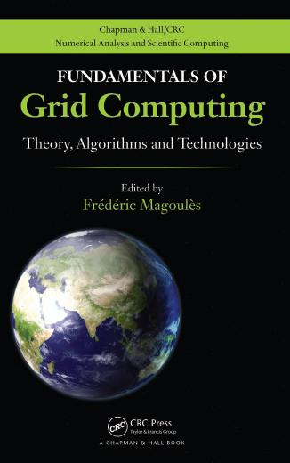
Fundamentals of Grid Computing: Theory, Algorithms and Technologies
Editors: F. Magoulès.
Publication: Chapman & Hall/CRC · 2009 · English.
ISBN: 978-1-4398-0367-7.
Book description
With contributions from: L. Arantes, J.M. Bahi, X. Besseron, M.-S. Bouguerra, C. Cerin, R. Couturier, H. Fkaier, T. Gautier, F. Legond-Aubry, F. Magoules, T.M.H. Nguyen, J.-M. Pierson, E. Saule, P. Sens, A. Sider, J. Sopena, L.-A. Steffenel, F. Teng, D. Trystram and L. Yu.
The integration and convergence of state-of-the-art technologies in the grid have enabled more flexible, automatic, and complex grid services to fulfill industrial and commercial needs, from the LHC at CERN to meteorological forecasting systems. Fundamentals of Grid Computing: Theory, Algorithms and Technologies discusses how the novel technologies of semantic web and workflow have been integrated into the grid and grid services.
The book explains how distributed mutual exclusion algorithms offer solutions to transmission and control processes. It also addresses the replication problem in data grids with limited replica storage and the problem of data management in grids. After comparing utility, grid, autonomic, and cloud computing, the book presents efficient solutions for the reliable execution of applications in computational grid platforms. It then describes a fault tolerant distributed scheduling algorithm for large-scale distributed applications, along with broadcasting algorithms for institutional grids. The final chapter shows how load balancing is integrated into a real-world scientific application.
Helping readers develop practical skills in grid technology, the appendices introduce user-friendly open source software written in Java. One of the software packages covers strategies for data replication in the grid. The other deals with the implementation of a simulator for distributed scheduling in grid environments.
The various technology presented in this book demonstrates the wide aspects of interest in grid computing as well as the many possibilities and venues that exist in this research area. This interest will only further evolve as numerous exciting developments still await us.
2008
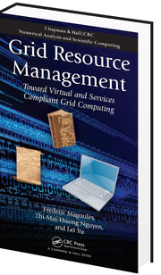
Grid Resource Management: Towards Virtual and Services Compliant Grid Computing
Authors: F. Magoulès, T.-M.-H. Nguyen and L. Yu.
Publication: Chapman & Hall/CRC · 2008 · English.
ISBN: 978-1-4200-7404-8.
Book description
Grid technology offers the potential for providing secure access to remote services, thereby promoting scientific collaborations in an unprecedented scale. Grid Resource Management: Toward Virtual and Services Compliant Grid Computing presents a comprehensive account of the architectural issues of grid technology, such as security, data management, logging, and aggregation of services, as well as related technologies.
After covering grid usages, grid systems, and the evolution of grid computing, the book discusses operational issues associated with web services and service-oriented architecture. It also explores technical and business topics relevant to data management, the development and characteristics of P2P systems, and a grid-enabled virtual file system (GRAVY) that integrates underlying heterogeneous file systems into a unified location-transparent file system of the grid. The book covers scheduling algorithms, strategies, problems, and architectures as well as workflow management systems and semantic technologies. In addition, the authors describe how to deploy scientific applications into a grid environment. They also explain grid engineering and grid service programming.
Examining both data and execution management in grid computing, this book chronicles the current trend of grid developments toward a more service-oriented approach that exposes grid protocols using web services standards.
Computational Methods for Acoustics Problems
Editors: F. Magoulès.
Publication: Saxe-Coburg Publications · 2008 · English.
ISBN: 978-1-874672-30-2.
Book description
With contributions from: X. Antoine, J. Astley, A. Bendali, R. Djellouli, O. von Estorff, M. Fares, M. Guddati, P. Kunthong, K.-W. Lim, F. Magoules, M. Markiewicz, K. Meerbergen, F.-X. Roux, S. Subbarayalu, L. Thompson, E. Turkel, A. Zahid and O. Zaleski.
With the advances in high performance computing, computational acoustics and computational vibro-acoustics have gained momentum because they provide the most natural route for accurate noise prediction. The computation of acoustic phenomena is regarded today as one of the most challenging in scientific computation. Both discretisation methods and numerical schemes continue to be investigated, developed and applied to various industrial problems. This volume presents in eleven chapters key computational methods for acoustics and vibro-acoustics problems. Each chapter, written by different authors, presents a state of the art of well-established or innovative methods, techniques or algorithms. A bibliography is included at the end of each chapter.
The examples covered in this book are wide-ranging and demonstrate the extensive use of computational methods for acoustics and vibro-acoustics problems both in bounded and unbounded domains.
The main topics considered in the book include: boundary element methods, infinite elements, perfectly matched discrete layers, absorbing boundary conditions, on-surface radiation conditions, optimal interface conditions, stabilized time-discontinuous Galerkin methods, model reduction methods, iterative methods for acoustics problems in unbounded regions, inverse acoustics problems, substructuring methods for coupled vibro-acoustics problems, acoustics eigenvalue problems, validation of numerical methods in acoustics, and acoustic scattering.
2007
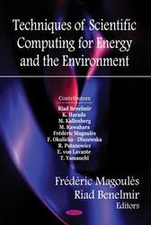
Techniques of Scientific Computing for Energy and the Environment
Editors: F. Magoulès and R. Benelmir.
Publication: Nova Science Publishers · 2007 · English.
ISBN: 978-1-60021-921-4.
Book description
With contributions from: K. Harada, M. Kawahara, M. Kallenberg, E. von Lavante, F. Magoules, F. Okulicka, Dluzewska, R. Putanowicz and T. Yamauchi
Research and development in scientific computing and computational science has considerably increased the power of numerical simulation. Engineers and researchers are now able to solve large and complex problems which were impossible to solve in the past. This book presents some techniques, methods and algorithms for solving engineering problems arising in energy and environment applications.
The main topics considered in the book include: multiplication of plankton, geological bassin modelling, large data visualization for environmental problems, flow around a propeller, supersonic combustion, finite element method, fictious domain method, high performance computing.
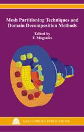
Mesh Partitioning Techniques and Domain Decomposition Methods
Editors: F. Magoulès.
Publication: Saxe-Coburg Publications · 2007 · English.
ISBN: 978-1-874672-29-6.
Book description
With contributions from: L. Champaney, M. Cross, D. Dureisseix, L. Giraud, F. Hulsemann, T. Knopp, J. Kruis, C. Lacour, G. Lube, R. Banos Navarro, G. Nikishkov, C. Gil Montoya, F. Magoules, R. Putanowicz, G. Rapin, F.-X. Roux, M. Sarkis, D.B. Szyld, R. Tuminaro and C. Walshaw.
Domain decomposition provides computationally efficient parallel and distributed solution of large scale problems. These methods mainly consist of splitting the global domain into several sub-domains and to compute the solution on the global domain through the resolution of the problem associated with each sub-domain. The aspect ratio of the sub-domains and the shape of the interface between the sub-domains have a significant influence on the convergence of domain decomposition methods. This volume presents in thirteen chapters both mesh partitioning techniques and domain decomposition methods. Each chapter, written by different authors, presents a state of the art of some important methods, techniques or algorithms. A bibliography is included at the end of each chapter.
The main topics considered in the book include: multilevel graph partitioning, multi-constraint and multi-objective optimization for graph partitioning, visualization of graph partitioning, sub-structuring methods, primal and dual Schur methods, domain decomposition methods with special focuss on FETI, FETI-DP, FETI-H, additive and multiplicative Schwarz, Aitken-Schwarz, optimized Schwarz method, mixed domain decomposition method, the mortar element approach in the context of domain decomposition, algebraic preconditioning techniques and multilevel preconditioning techniques.
The topics covered in this book are wide ranging and demonstrate the use of mesh partitioning and domain decomposition methods in fluid mechanics, acoustics and structural mechanics.
2006
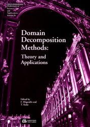
Domain Decomposition Methods: Theory and Applications
Editors: F. Magoulès and T. Kako.
Publication: Gakkotosho, Mathematical Sciences and Applications · 2006 · English.
ISBN: 4-7625-0434-3.
Book description
With contributions from: J. Bahi, R. Couturier, H. Fujita, T. Kako, H. Kawarada, C. Lacour, Y. Maday, F. Magoules, F. Nataf, F.-X. Roux, H. Suito, N. Saito, K. Touda and D. Tromeur-Dervout.
This book describes in nine Chapters the most important domain decomposition methods and algorithms. Each Chapter presents a state of the art of one famous method or algorithm both from a mathematical and a programming point of view. A large bibliography is included at the end of each Chapter. The contents of the book include: Optimized Schwarz methods; Aitken-Schwarz method; Non-conforming domain decomposition method; Absorbing interface conditions; Dirichlet-to-Neumann maps; Asynchronous multi-splitting methods; Application to linear and nonlinear systems; Applications to acoustics; Application to acoustic shape optimization. This book will be of interest to engineers, computer scientists and mathematicians.
Last updated: .